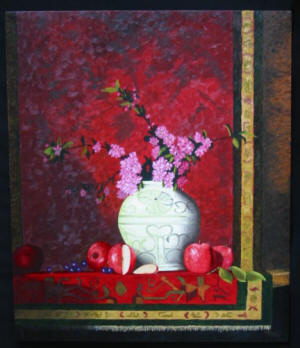

|

Call, he is always home
20" x 16" oil on canvas
|
|
Donn’s most recent paintings are in this
gallery.
Every 50 steps down a sidewalk, street or road, a
homeless person is at another address. They have a
million addresses and will be at one when you call.
This painting was juried into Audubon Artists, Inc.
2012, an online New York exhibition. |
|

Faith with an Opaque Finger
24 in. x 30 in.
|
|
This is Donn's contemporary rendering of the
Bible verse in Deuteronomy 11:26-28. The woman
represents both men and women of all faiths as
suggested by a variety of worship buildings in the
horizon. Faith has an opaque finger on her left
hand; it indicates that despite our best intentions,
we sometimes choose to make the wrong decision.
Created with a free will, God allows us to make
choices which result in either a blessing or a
curse. Faith stands among the aftermath of a curse
with the promised and missed blessing being hidden
behind her back but visible to the viewer. What will
we choose next time? |
|

The Hidden Key
38” x 32” oil on canvas
Collection of Tory & Lisa Ziebell (New Hampshire)
|
|
This is my first
still life painting. After the painting was well
underway, I got excited about the challenge this
painting presented when I finally chose the title.
Then the challenge was “to have a hidden key or
not?” Either choice would work! I do have a key
hidden that can only be found when you are viewing
the real painting. As usual, I always fall in love
with my paintings when they are finished. Giving
them up is difficult but starting a new painting
helps soothe my soul so I can move forward again.
 |